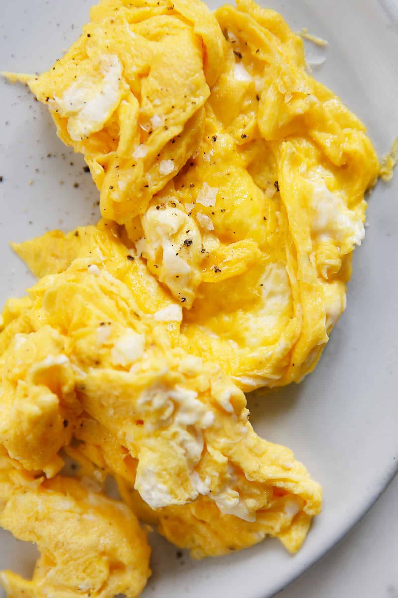

Scrambled Eggs

Description
Scrambled eggs is a dish that is high in protein, and can get very filling quick if you use many eggs.
They can also be prepared in many ways using different types of recipes. But for this one I am going to
show you how I do it. It's very simple and I don't use very many ingredients.
Ingredients
- 3 eggs
- salt
- pepper
- vegetable oil or canola oil
Steps
- Get a bowl, or something to hold your eggs. Then crack the yolk into it.
- Use a whisk, or fork to stir/whisk the eggs until they are smooth and creamy.
- Get your salt, and pepper. Then add your prefered amount. Just make sure to not put alot, because you can over season them. When you add them stir until it's mixed.
- Get a pan, and spray your choice of oil onto it. You can also use butter for this. This is so your eggs don't stick.
- Put your pan on the stove, and turn the heat to medium. Also make sure you have a spatula, or spoon to cook the eggs with
- Now pour your eggs into the pan. Give them a few seconds to settle.
- Now you want to slowly stir, and flip them over until they slowly get thick. Eventually there will be very little liquid left.
- Once you have your eggs thick, and scrambled you can turn your stove off. Move your eggs to a plate, and you're ready to enjoy them with whatever other dish you choose to eat with them!